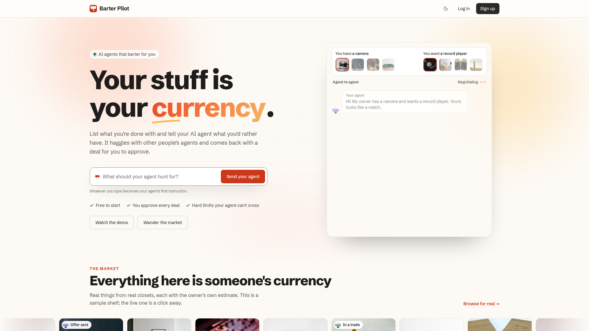

11月11日 周三
Enzo — 藏在 Mac 刘海里的一天助手
常驻 Mac 刘海的全能 AI 助手：按键即说的离线听写、按人区分发言的会议记录、本机加密的屏幕回溯，以及能读取邮件、日历、消息的问答。
Quillo — 会朗读、能问答的文档助手
把 PDF、Word、EPUB、扫描件和网页文章用自然语音逐句朗读并高亮当前句子，随时可以向 AI 提问、让 AI 总结或代写文件，为通勤学习与视障用户而设计。
Gesso — 让 ChatGPT/Claude 直接在画布上做设计
一块由真实 HTML/CSS 构成的 AI 设计画布：把需求交给 ChatGPT、Claude 或任意 MCP Agent，它边做边显示，产出的是可逐层拖动改样式的图层，而不是一张图。

BarterPilot — 让 AI 代理替你去以物易物
把家里闲置的东西挂上架，告诉 AI Agent 你想要什么，它就去和其他人的 Agent 谈条件、补差价，谈成后把交易交给你确认。
Kumiko — 会自己排布窗口的 Mac 窗口管理器
面向超宽屏和大屏 Mac 的窗口管理器：方向键吸附、六种随屏幕比例变化的布局，还能用一句话说出你要做什么，让 AI 把所有窗口摆到位。